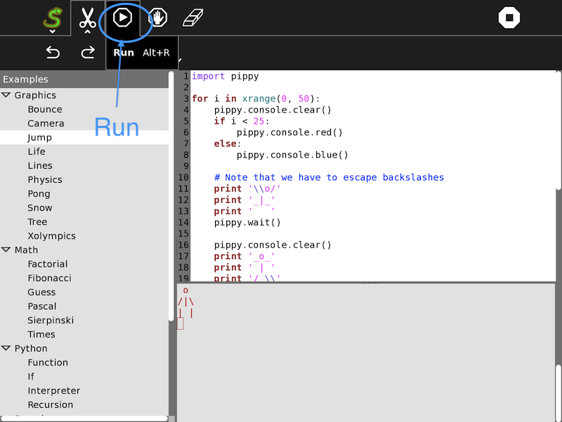

Pippy allows the student to examine, execute, and modify simple Python programs. In addition it is possible to write Python statements to play sounds, calculate expressions, or make simple text based interactive games.
Pippy is included in the standard releases of the OLPC software. It is available for download here
The left column is a list of python programs, which can be viewed, and modified in the upper left window, and where the results of execution are displayed in the lower right window.
Etoys and Turtle art provide easy introduction to programming. Pippy introduces a more traditional view of programming a computer, wherein the instructions are first written to a text file, and then executed with a “run” command.
In particular, it is instructive to play with the sounds:
If Pippy is used in parallel with the Write Activity, it is possible to develop larger programs. Copy the program that you develop in the Write Activity by selecting all (<ctl>a) and copying it to the clipboard (<ctl>c), then switch to the Pippy Activity, and paste (<ctl>v) it into the code window. If there are errors that you want to correct, you can make the changes in the code window, and immediately see the results of your changes. Then by copying the changed program back to the clipboard, you can paste it back into the Word Activity, and save the changes to the Journal.
The student can add small programs, and have them show up in the left column of Pippy by adding files to /home/olpc/Activities/Pippy.activity/data. There is a large number of suggested examples of programs for Pippy at http://wiki.laptop.org/go/Pippy#Examples.
There’s a range of ways to report problems. The easiest is to email to the sugarlabs email list at sugar-devel@lists.sugarlabs.org. Someone on the list will respond to you, and perhaps also put a formal bug report at http://bugs.sugarlabs.org/.
Or you can register at http://bugs.sugarlabs.org/ and enter a bug report yourself.
| author: | G Hunt 2012 |
|---|